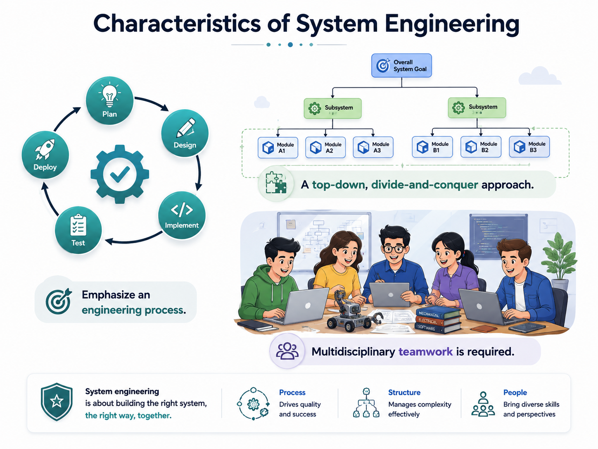

System Engineering
A software product rarely succeeds alone. Real systems combine software with hardware, people, procedures, data, external services, and an operating environment.
Explain why software engineering is a subsystem discipline within system engineering and identify the interacting parts that determine whole-system success.
When is working software still a failed system?
When the software is correct but the scanner cannot communicate with it, the operators cannot use it safely, the network cannot carry the load, or the surrounding procedure contradicts it. System engineering therefore optimizes the whole system, not one technical component in isolation.
Physical devices, processors, sensors, networks and equipment.
Programs, services, data processing and control logic.
Operators, users, maintainers and other stakeholders.
Operational rules, workflows, policies and manual activities.
Physical, organizational, regulatory and external-system constraints.

Software engineering inside system engineering
System engineering begins from the mission and system-level needs. It defines and structures the complete system, allocates responsibilities to subsystems, coordinates their development, and integrates them. Software engineering then develops the software subsystem within those system constraints and interfaces.
Whole system: hardware + software + people + procedures + environment
Software subsystem: requirements + design + implementation + testing + evolution
Airport Baggage Handling System (ABHS)

Read the visual from the inside out. The point is not just to name components; it is to see the engineering boundaries and interfaces between them.
No. Its boundary is broader: it coordinates multiple engineering disciplines and human/organizational elements and manages interactions among them throughout the system life cycle.
Software can be correct locally and the system can still fail globally. System engineering makes the parts work as one system.